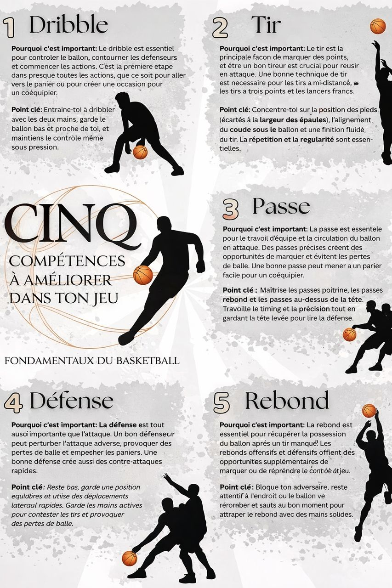
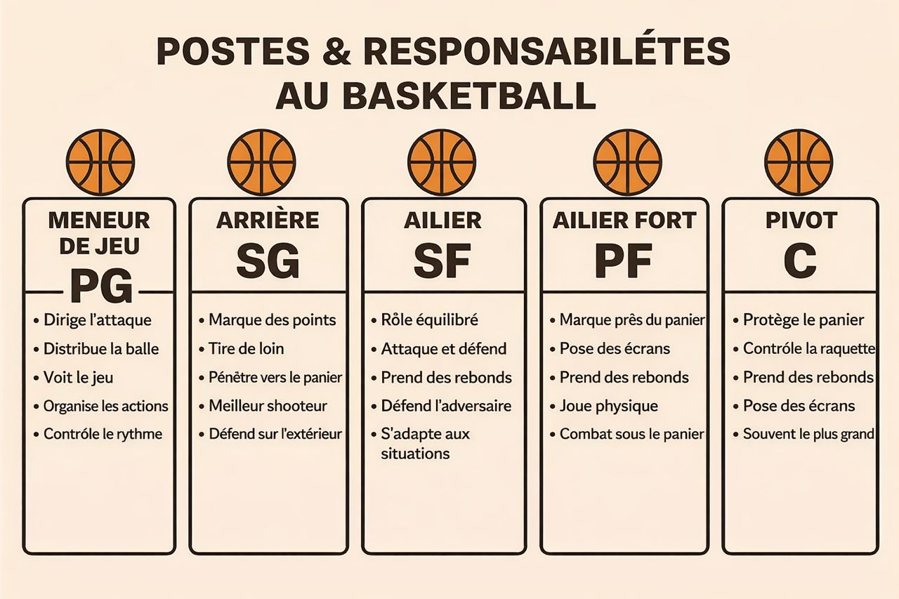
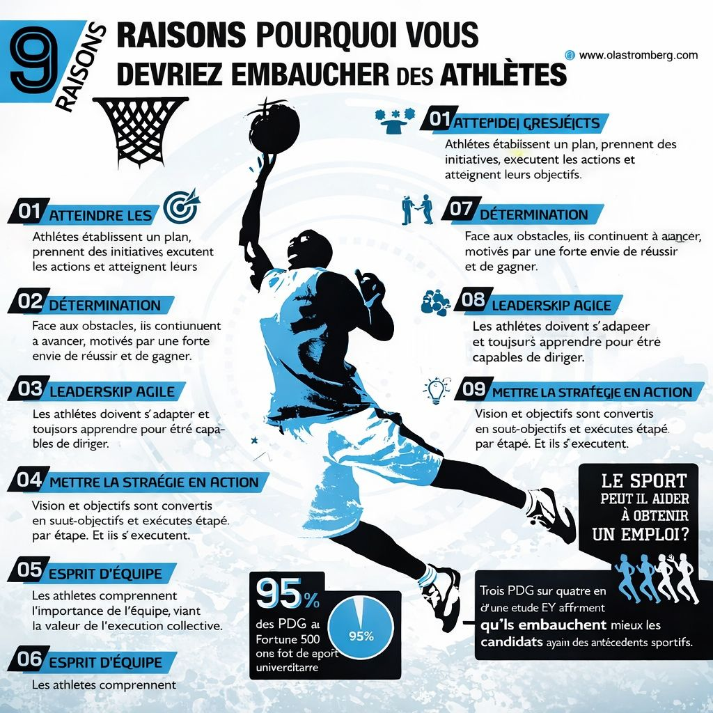

Qu'est-ce que le Basketball ?
Le basketball est un sport collectif dynamique et rapide, qui se joue sur un terrain rectangulaire entre deux équipes. Chaque équipe cherche à marquer des points en lançant le ballon dans le panier de l’adversaire, un cercle métallique surmonté d’un filet. Le ballon peut être déplacé en le dribblant (le faisant rebondir au sol) ou en le passant à un coéquipier. Le jeu combine des compétences physiques et stratégiques : vitesse, coordination, endurance, précision et esprit d’équipe. Les équipes doivent à la fois défendre leur panier et attaquer celui de l’adversaire, ce qui rend le match très dynamique. Les points sont attribués selon l’endroit d’où le tir est effectué : les tirs à l’intérieur de la ligne des 3 points valent 2 points, ceux au-delà valent 3 points, et les lancers francs valent 1 point. Le basketball est pratiqué partout dans le monde, aussi bien de manière professionnelle qu’amateur, et il est particulièrement populaire grâce à des ligues célèbres comme la NBA, qui ont contribué à en faire un sport spectaculaire et universel.
Ce sport demande vitesse, précision, coordination et esprit d'équipe. Il est aujourd’hui pratiqué dans presque tous les pays du monde.
Règles principales
- Chaque équipe possède 5 joueurs sur le terrain.
- Un panier vaut 2 ou 3 points selon la distance.
- Les matchs sont divisés en 4 quart-temps.
- Le joueur doit dribbler pour se déplacer.
L'image ci-dessous illustre les notions de base du basketball :

Les postes du basketball
Les joueurs de basketball occupent différents postes sur le terrain, chacun avec des rôles spécifiques. Le meneur de jeu (point guard) est souvent le stratège de l’équipe, responsable de diriger les attaques et de distribuer le ballon. L’arrière (shooting guard) est généralement un excellent tireur à longue distance et un défenseur solide. L’ailier (small forward) est polyvalent, capable de marquer des points et de défendre efficacement. L’ailier fort (power forward) joue près du panier, utilisant sa force pour marquer et récupérer les rebonds. Enfin, le pivot (center) est souvent le joueur le plus grand et le plus fort, dominant la zone proche du panier pour marquer et protéger la défense.
Chaque poste a des responsabilités spécifiques, mais tous les joueurs doivent travailler ensemble pour réussir. Le basketball est un sport d’équipe où la communication et la coordination sont essentielles pour gagner. L'image ci-dessous montre les différents postes sur le terrain :

Les bienfaits du Basket et l'impact sur la vie professionnelle
Le basketball améliore l’endurance, la coordination, la rapidité et développe l’esprit d’équipe. Il favorise également la discipline et la concentration.Cette image ci dessus met en evidence neuf qualités pricipales que les athletes apportent au monde professionnel.

Découvrez les équipes NBA
Pour voir toutes les équipes de la NBA et leurs joueurs, cliquez sur le lien ci-dessous :
Voir les équipes sur YouTube